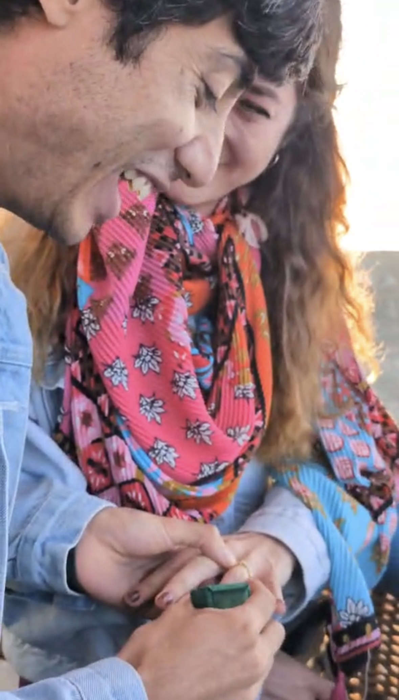
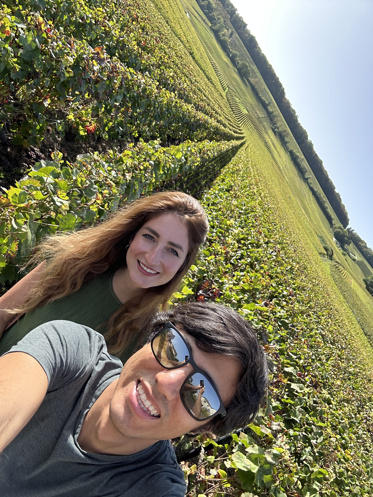
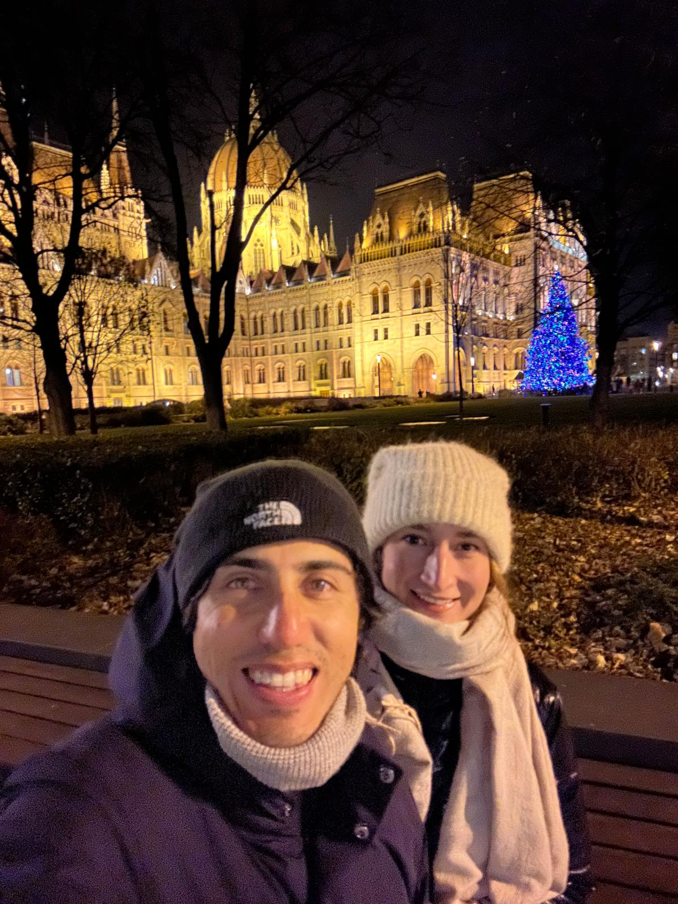
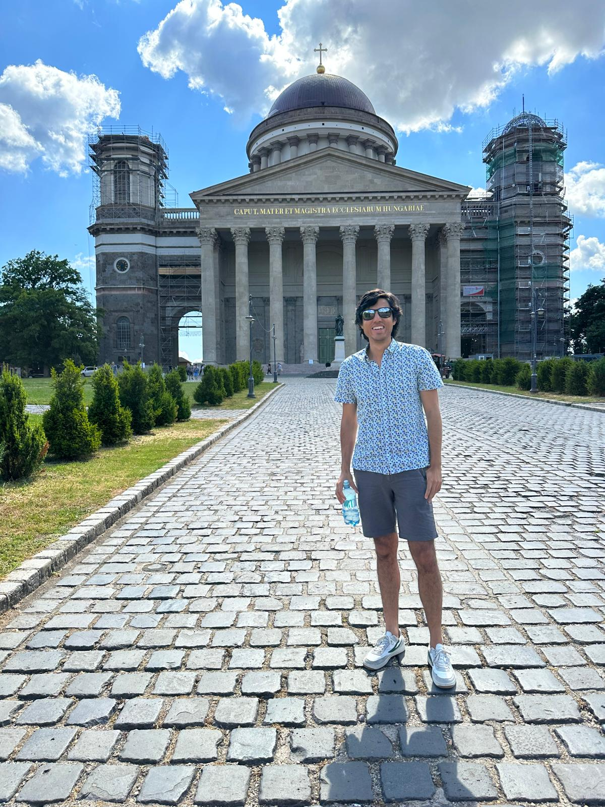

Thank you for being part of our story 💕
We hope you'll join us for the day we'll cherish forever.
Rókusfalvy Birtok · Etyek, Hungary
Guests are welcomed from: 15:30
Ceremony begins promptly at: 16:30
Kindly RSVP by April 30, 2026

Arrive early, stay late, and enjoy every moment. Here's a loose timeline of the day. Just make sure to try our favorite pisco sour! 🍸
Rókusfalvy Birtok, Etyek, Hungary
Rókusfalvy Birtok, Rókusfalvy út 1, 2091 Etyek
Parking is possible for approx. 100 cars, so feel free to come by car!
Early arrivals are rewarded with drinks, good company, and front-row seats — let's make the most of every moment together that day.
This is where we get a little emotional — love, nerves, and the welcome drinks all contributing.
Back to business.. back to drinks, cheers, light bites, and plenty of mingling.
Take your seats — we'll start with a short welcome toast, then you're free to wander to the buffet.
Live band takes the stage — let the party begin.
Our DJ switches on the Latin vibes as we cut the wedding cake.
🥂🥂🥂🥂🥂🥂🥂🥂
A little fuel to keep the dancing going.
🥂🥂🥂🥂🥂🥂🥂🥂
UNTIL DAWN!
It all started with an unexpected match, and the rest is history. Some moments are beyond words — so here are a few pictures instead.
Click the photos to see the story behind each moment.
The venue is located approximately 30–40 minutes from Budapest by car, or about 1–1.5 hours by public transport from downtown Budapest with just one change, dropping you off directly in front of the venue.
To make things easier for everyone, we are planning to organize shuttle buses in both directions. Please find the details below.
🏨 Accommodation
Please find here a nearby accommodation option in Etyek for those who would like to stay close to the venue (approximately a 15-minute walk). Please find the link below:
When you RSVP, please let us know whether you plan to stay in Etyek or return to Budapest after the wedding — this will help us plan transport accordingly. Thank you! 🤍
🚌 Afternoon shuttle (Budapest → Etyek)
We are planning a bus from Budapest to Etyek to arrive around 15:30, so you can be there from the very beginning of the celebration. Details will be shared closer to the date.
🚌 Evening shuttle (Etyek → Budapest)
We are currently planning shuttle buses from Etyek to Budapest between 00:00 and 03:00, departing approximately every hour. Once we have a clearer idea of guest numbers, we will tailor this service specifically to you.
🚌 Public Transport
Alternatively, you may also reach the venue by taxi or public transport if you prefer not to use the shuttle service.
The 760 bus runs hourly between Kelenföld vasútállomás and Rókusfalvy Birtok, Etyek, with a travel time of approximately 50 minutes.
From downtown Budapest to Kelenföld, we recommend taking Metro Line 4 (M4), though other routes are also possible depending on your location.
Approximate departures:
Dress Code: Business Casual 👗👔
We'd love for you to feel comfortable — but let's save the sweatpants for Netflix night. 🍿🛋️
For the ladies, we'd love to see bright, joyful colors — let's make the dance floor look like a confetti explosion. ✨💃
For the gentlemen: Business casual works perfectly — we trust you know what to do. 😉🕺
We are so excited to celebrate this special day with you — and we cannot fully express how grateful we are that you're going the extra mile, investing your time and effort to be here with us. 💍🥂
If you would like to give us a gift, a monetary contribution toward our future together would mean a lot to us 🤍
To keep things simple, we kindly ask that our wedding remains cashless — please use the QR code or link below.
✨ Discover Budapest

Budapest is truly a wonderful city — vibrant, historic, elegant, and full of character.
We recommend spending 3–4 days here, which is more than enough time to explore the highlights, enjoy amazing food, relax in a thermal bath, and soak in the atmosphere without rushing.
There are plenty of well-known historic sights to explore.
We recommend using the Visit a City app for a tailor-made sightseeing plan. It allows you to organize your trip based on the number of days you're staying and creates a structured daily itinerary around the city highlights.
🌟 Must-See Highlights
🌙 Beyond the Famous Attractions
🌮 Our Favourite Restaurants
🏨 Accommodation
The downtown area is the V. district, but the most central and convenient districts for sightseeing are:
V., VI., and VII.
As a rule of thumb: If you book accommodation in any of these districts with strong reviews, you can confidently trust your choice.
Hotels rated 4★ or 5★ in these areas typically offer excellent comfort and service.
If you have any specific questions about where to stay, please feel free to reach out to us — we are happy to help 🤍
♨️ Thermal Baths
Budapest — and Hungary in general — is world-famous for its thermal baths. And to highlight: these places are clean and well maintained.
Rudas Baths
Our personal favourite. It features a panoramic rooftop pool with breathtaking views of the Danube and the bridges.
Széchenyi Thermal Bath
The most famous and iconic thermal bath in Budapest.
It is known for its large outdoor pools surrounded by beautiful yellow Neo-Baroque architecture. In winter, the rising steam creates a magical atmosphere. It's lively, social, and offers the classic Budapest bath experience.
⭐ Discover Esztergom – Réka's Hometown

If you have extra time during your stay, we highly recommend a day trip to Esztergom, one of Hungary's most historic towns, located about 1–1.5 hours from Budapest.
There is also the opportunity to go by Danube cruise, which takes approximately 4–5 hours and offers a scenic journey along the river. Alternatively, there is an easy direct train connection of about one hour.
Esztergom was once the capital of Hungary and remains the spiritual center of the country. Its main highlight is the Esztergom Basilica, the largest church in Hungary and one of the largest in Europe.
The basilica sits high above the Danube and offers breathtaking panoramic views — you can even see Slovakia just across the river.
If you would like to visit the city, please let us know — we would be happy to prepare a separate full-day plan… or even go together 🤍
If you have any questions, please don't hesitate to reach out to us.
We're happy to help! 💬